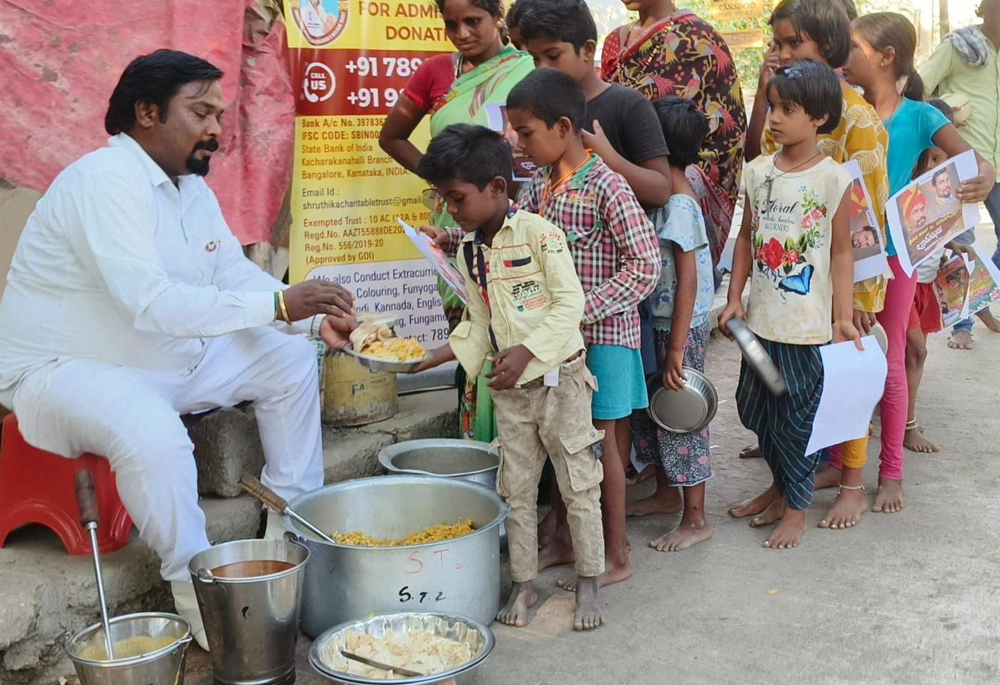

Our Mission
To provide food, shelter, education, and moral support to children, helping them find the path to a settled and respectful future.
Our People Our Responsibility

The Shruthika Women's and Children's Welfare Trust is dedicated to uplifting the lives of abandoned orphans, underprivileged children, and women in need.
The trust was founded by Lion Dr. S. Sathish, born to late Shekaran. M (HAL) and late Thilagavathi. He lives in Periyar Nagar, D.J. Halli, Ward No. 48, Pulikeshinagar Assembly Constituency, Bengaluru North, and completed his I PUC.
From his youth he was drawn towards social service — above all towards disabled and orphaned children. He earned his living as a car driver, and that early inspiration never left him.
The trust did not begin with a building or a budget. It began with a young man in Bengaluru who could not look away from children who had no one — and who spent the years that followed finding practical ways to help them.
Serving humanity is considered to be serving God.

Born in Bengaluru, Lion Dr. S. Sathish was moved from his student years by the lives of disabled and orphaned children around him. Long before there was a trust to run, there was simply a determination to be useful to them.
He earned his living as a car driver — modest, everyday work that never dimmed the resolve he had carried since his youth.
He founded Karnataka Rakshana Yuva Pade (KRYP), a registered Kannada outfit that works to promote the Kannada language, culture and heritage.
The Lions Club honoured him with a Doctorate and made him President — the recognition behind the name by which he is known today, Lion Dr. S. Sathish. The trust's community marriage services are arranged with the help of the Lions Club, Bengaluru.
During the COVID-19 pandemic he provided humanitarian aid to vulnerable people — food, ration kits, water, medicines, blankets and bedsheets, carried to those who had been left with nothing when the city stopped.
So that charitable work would have a steady source behind it, he established 'SHRUTHIKA ENTERPRISES' — a business unit set up to fund the service he intended to give.
With that foundation in place, he started the SHRUTHIKA WOMEN'S AND CHILDREN'S WELFARE TRUST (R.) — dedicated to abandoned orphans, single parent children, underprivileged children and women in need, with food, shelter, education and moral support.
Two simple commitments hold this trust together — one about what a child receives today, and one about the life that child is able to build tomorrow.
To provide food, shelter, education, and moral support to children, helping them find the path to a settled and respectful future.
To transform lives in accordance with cultural values, ethics, and human dignity, ensuring a worthier future for suburban and rural poor.
Lion Dr. S. Sathish started the “SHRUTHIKA WOMEN'S AND CHILDREN'S WELFARE TRUST (R.)” with the following objectives:
They are written plainly, because they are meant to be checked against our work rather than admired on a page.
To help the abandoned orphans and single parent children with a zeal to improve their living skills through education and help them to attain self respect and self esteem.
To have access with orphans and underprivileged children and indulge in supporting them for their overall development and growth in their life.
To ensure a better future for such children and create a worthier future for the children of rural and sub-urban poor parents and earn their meal and continue their education till they get a respectful job to quench their hunger.
To provide specialized services in arranging community marriage services with the help of Lions Club, Bengaluru.
Nothing here is complicated. It is the ordinary set of things every child should be able to take for granted — and the reason the trust exists is that some children cannot.
A better future is built the slow way — one meal, one school year, one child who finally feels safe. Walk with us: donate, volunteer, or simply write to us and ask how you can help.